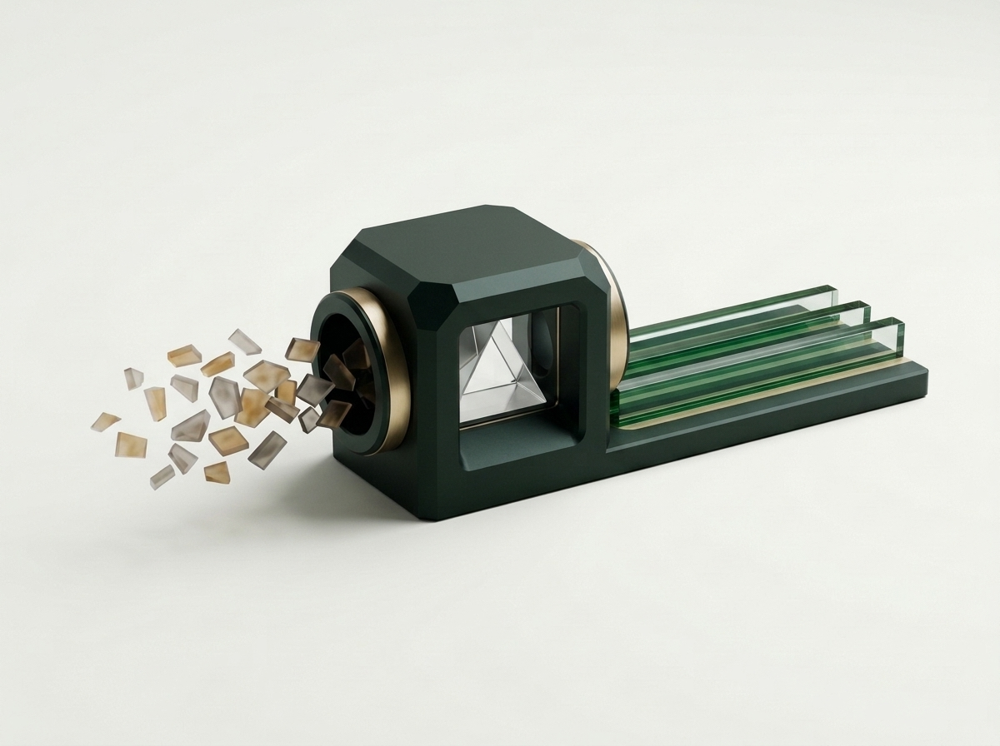
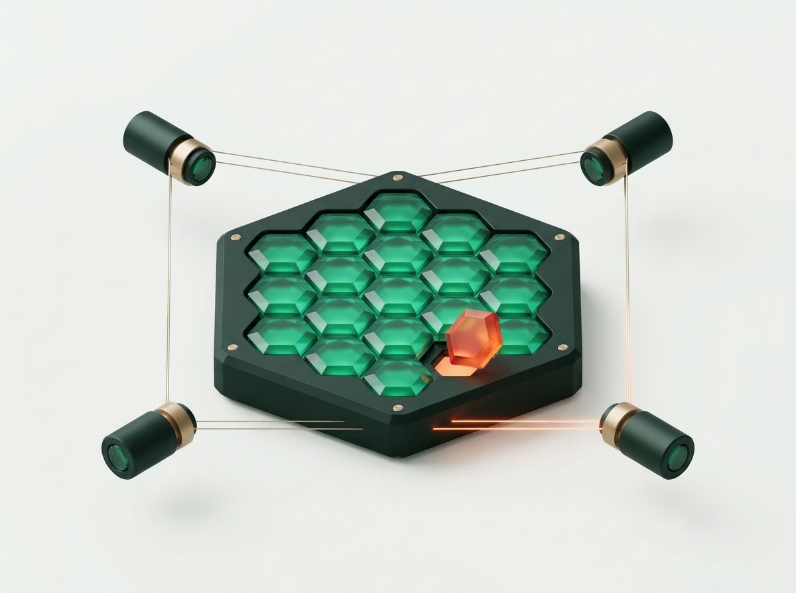

Lion Gate
From $49 / mo
Deterministic policy proxy + CI proof GitHub Action for payouts, IAM, and prod deploys. Enforces rules in 7 ms with signed receipts.
Explore Gate →Unguarded tool calls, unverified research claims, and stale swarm memory break agents in production. Plug in Lion Cloud over HTTP or MCP for deterministic rules, signed proofs, and 43% lower token spend.

Policy checks in 7.1 ms vs. 1,789 ms on Claude Sonnet 5.5.
Live Sonnet extraction slips rejected and auto-repaired.
Stale swarm errors after mid-incident edits, at 43.5% less spend.
Deterministic policy proxy + CI proof GitHub Action for payouts, IAM, and prod deploys. Enforces rules in 7 ms with signed receipts.
Explore Gate →
Write-time claim verification + Analyst Workbench for diligence, legal, and compliance. Retires outdated docs and proves math bounds.
Explore Dossier →
Hosted MCP workspace + 26 ms live handoff bus for coding, SRE, and ops swarms. Pins clues to file hashes and cuts Sonnet spend 43.5%.
Explore Fabric →Every platform runs on MIT-licensed @lionlang/core 0.19 — pay only for the hosted control plane, workbenches, CI actions, and signed audit portals.
| Layer | MIT @lionlang/core (Free) | Lion Cloud (Hosted or VPC) |
|---|---|---|
| Runtime | Embedded JS/TS library | Managed HTTP/MCP APIs, live handoffs & Git sync |
| Workflow UI | None (CLI only) | Policy Hub, Dossier Workbench & Swarm Replay UI |
| CI & Audit | Wire proofs & keys yourself | GitHub Actions, replay diffs, signing & verifier links |
| Setup time | Weeks of custom plumbing | 10-minute drop-in with pre-built vertical rule packs |
Bring one production agent workflow — we'll help you wire policies, grounding rules, or MCP sync in a single afternoon.